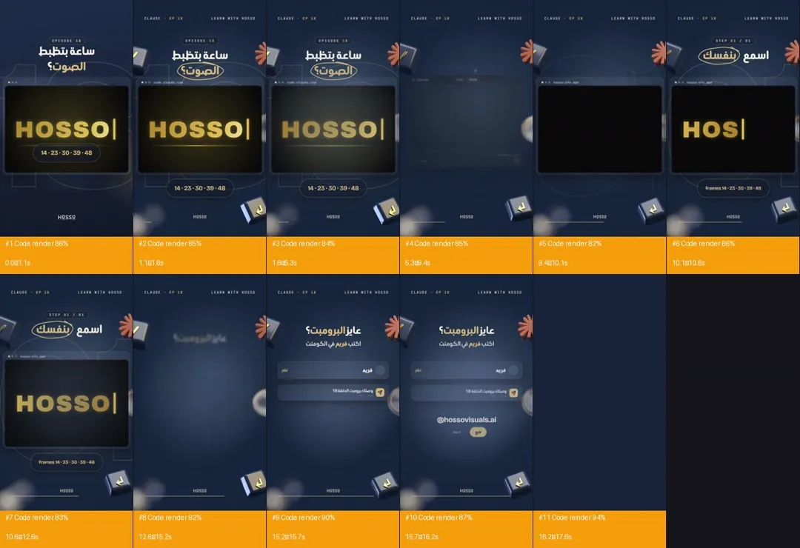
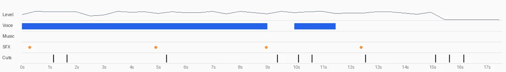

أي فيديــو،لقطة لقطـــة
REA Video أداة مجانية ومفتوحة المصدر: تديها أي فيديو، تقولك كل لقطة اتعملت إزاي (تصوير، ولا ذكاء اصطناعي، ولا كود)، وتطلّع الترجمة والمؤثرات الصوتية بتوقيتها، وخطة تعيد بيها الفيديو. دي الطريقة اللي ركّبتها بيها وجرّبتها على حلقة من بتوعي.


- 01
إيه اللي محتاجه
Claude Code على الكمبيوتر، وPython 3.10 أو أحدث، وffmpeg. لو مش عارف عندك ولا لأ، Claude هيشيّك ويركّب الناقص لوحده في الخطوة الجاية.
- 02
قول لـ Claude يركّبها
افتح Claude Code في أي فولدر وابعتله الرسالة دي. هو هيركّب الأداة، ويتعلّم طريقة شغلها، ويفكّ الفيديو بنفسه.
ركّب الأداة دي https://github.com/JuneYaooo/rea-video وبعدين فكّلي الفيديو ده لقطة لقطة بالإنجليزي، وقولّي كل لقطة اتعملت إزاي: [حط مسار الفيديو هنا] - 03
على ويندوز
لو ظهرلك خطأ فيه charmap أو حروف صيني، قول لـ Claude: «شغّلها بـ PYTHONUTF8=1 وخلّي اللغة إنجليزي (rea-video prefs lang en)». ولو اشتكى من opencv، قوله يشيل opencv-python ويسيب opencv-python-headless بس.
- 04
خلّي Claude يراجع اللقطات
من غير موديل بيشوف صور، الأداة ممكن تغلط في اللقطة (عندي قالت إن 3 لقطات كود معمولين AI). قول لـ Claude: «اعمل rea-video review وبص على كل لقطة بنفسك وبعدين apply-review». بعدها النتيجة طلعت صح: كل الـ 11 لقطة كود.

الـ 11 لقطة بتوع الحلقة 18 بعد مراجعة Claude: كلهم Code render - 05
اقرا التقرير
هتلاقي في فولدر النتيجة report.html (للعين) وVIDEO.md (لـ Claude). فيه كل لقطة بتوقيتها، والترجمة كسطور بتوقيتها، والصوت مفصول (صوت، مزيكا، مؤثرات) ومكان كل مؤثر، وفي الآخر خطة تعيد بيها الفيديو.

خط الصوت من التقرير: الكلام، و4 مؤثرات، ومكان كل قطع
نصايح صغيرة
- جزء «إعادة الفيديو بالذكاء الاصطناعي» (remake-run) بفلوس، ومش لازم: الخطة نفسها ببلاش، وتقدر تنفّذها بالكود مع Claude.
- استخدمها عشان تتعلم من الفيديو، مش تنسخه: خُد الفكرة والإيقاع، وحط شغلك وصوتك.